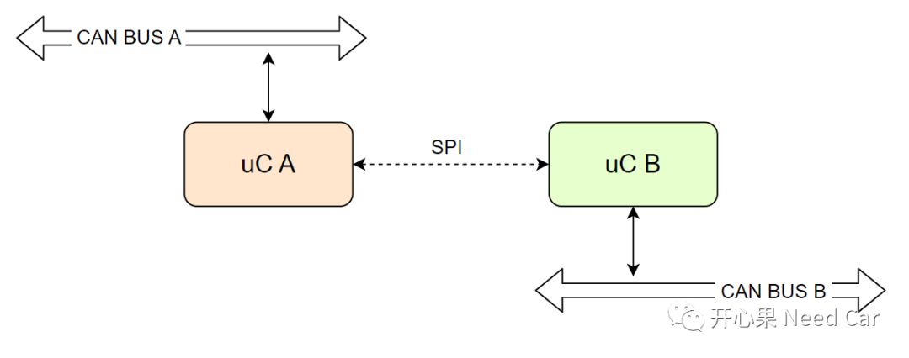
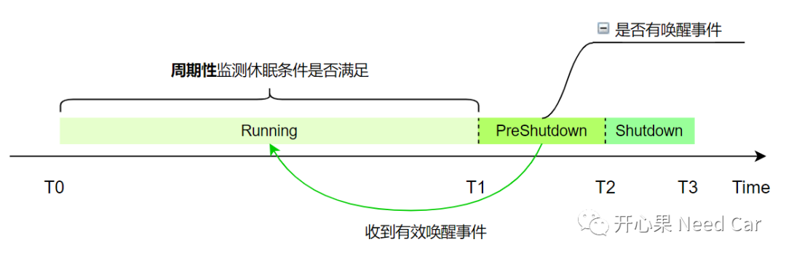
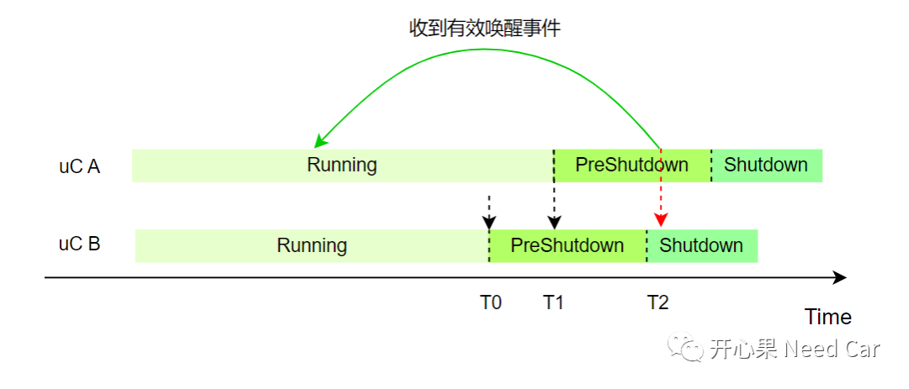
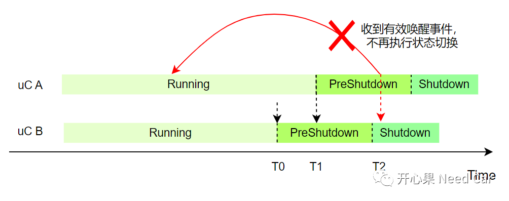

开心果 Need Car · 2023-08-25T07:07:00+08:00 · 微信原文
搞汽车电子的小伙伴，对于"功能安全"这个词应该不陌生。尤其ISO26262标准提出以后，汽车功能安全似乎有了大一统，汽车的研发、生产、测试、售后等整个生命周期，似乎都变得"有法可依"。然而，当这些美好的功能安全落地时，却存在各种各样的着陆方式，稍有不慎，就是一个硬着陆，"摔"地很疼。而这疼痛感，在软件实现方面，多处感知。本文聚焦软件某个功能安全机制，讨论其引发的工程问题。问题：ECU休眠过程中，网络状态不同步引发功能失效。
1、问题背景
可能，在我们的认知里，冗余方案可以看作另一个方案的Copy，两者独立运行，互不干涉。然而，在实际的工程设计中，往往很难做到完全的独立，多数时候，主方案和冗余方案存在耦合，这也就背离了功能安全的初衷。因此，这样的系统无法达到预期效果，反而引入了未知的工程问题。本文问题中，也存在类似的冗余设计，如下所示：

如上图，uC B是uC A的冗余方案，以此确保uC A失效时，uC B可以支持系统继续运行。而实际的设计中，uC B并不可能完全的替代uC A的作用，只是达到uC A的部分功能，这种只有部分功能的行为，我们习惯称为坡行（limp）。处于limp模式时，可能还会有功能降级，终端用户提示（eg：亮指示灯、文言提示等）处理。
而本文的问题中，发现：当uC A或者uC B失效时，功能处于完全失效状态，即：车辆处于趴窝。同时，报出对应的DTC以及故障提示，最终使得终端用户无法使用车辆。显然，这没有达到设计此功能的初衷。
2、原因分析

如上图，当uC正常工作以后，uC的通信及控制功能正常，处于Running状态，在Running状态下（T0~T1时间段），程序会周期性的监测休眠条件是否满足，此处的休眠条件需要在BswM中配置Rule，在BswM Main函数中周期性检测；
在T1时刻，如果程序满足了休眠条件（eg：没有KL15信号请求，且没有网络管理报文请求，且没有诊断请求，且没有其他User请求通信等），程序由Running状态切换到PreShutdown阶段，即：ECU休眠前的预处理阶段（T1~T2时刻），在此阶段内依然可以识别有效的唤醒事件，如果在此阶段收到有效的唤醒事件，程序会从PreShutdown阶段再返回到Running阶段；注意：这里的处理策略，不同的项目可能有所不同，此处也可以进行程序的Reset处理。
（一）uC A和uC B状态不同步原因解析

3、解决措施
问题明确了，解决措施也就清晰了，即：T0时刻，uC A识别到uC B休眠；T1时刻，uC A满足休眠，同时，通知uC B休眠，之后（T1时刻以后），即使再次收到有效的唤醒事件，也不再进行状态切换，即：强制执行休眠流程，确保uC A和uC B的同时休眠。

往期精彩回顾
基于Hightec+TC375TP的RT-Thread移植详解